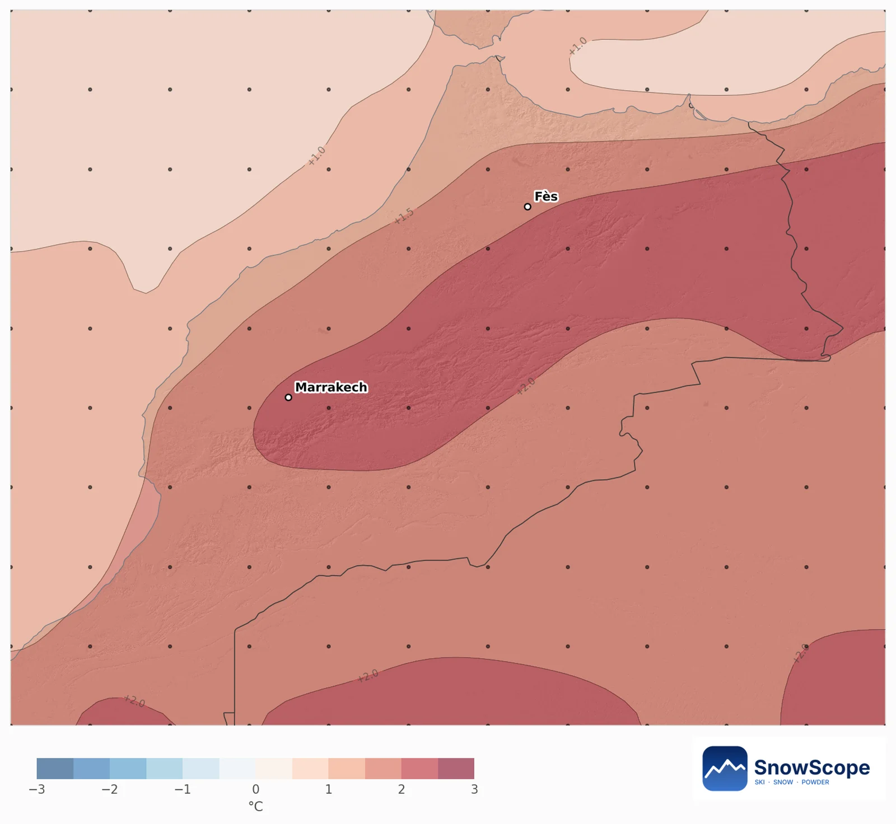
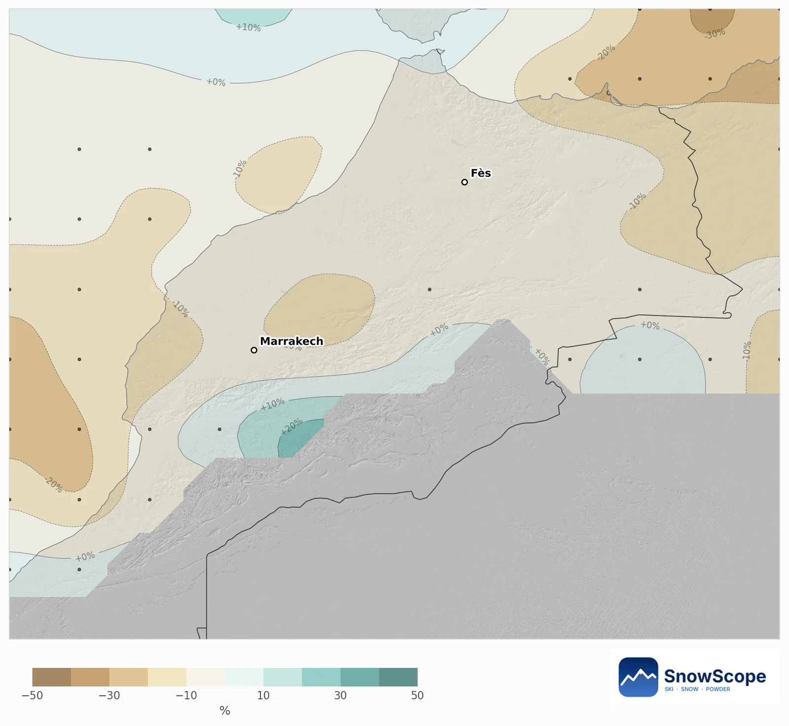
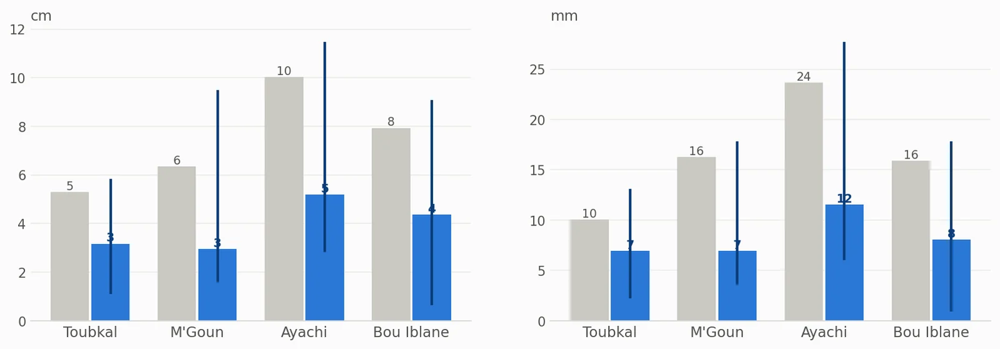
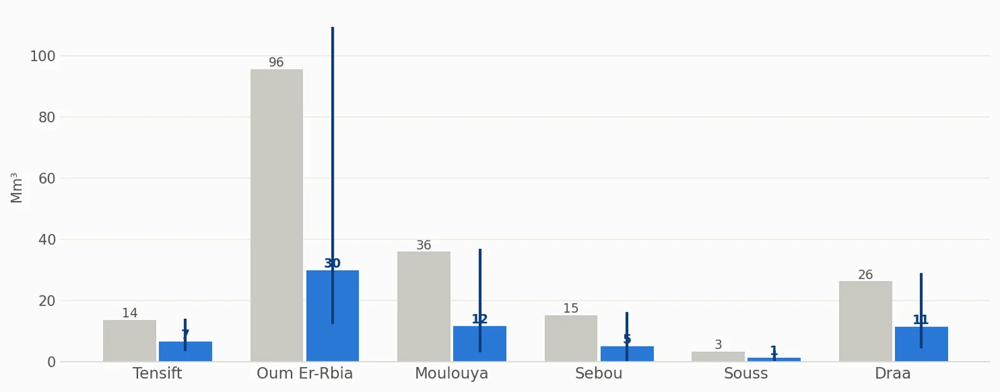
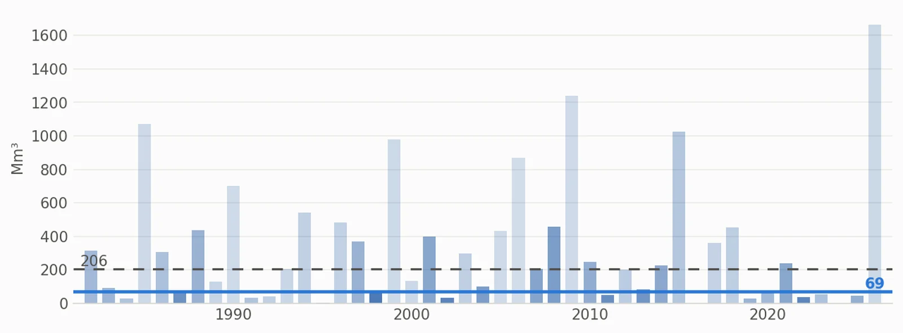

Schnee im Atlas im Januar 2027: ein warmer Monat, viel weniger Schneewasser
Die europäische Saisonprognose macht den Januar 2027 im Atlas etwa 2 °C wärmer als üblich, bei fast normalem Niederschlag. Zusammen mit 45 vergangenen Wintern neigen die Chancen klar zu weniger Schnee: etwa 69 Millionen m³ Wasser im Schnee der Berge Marokkos in einem solchen Monat statt der üblichen 206.
Die Live-Schneeprognose für Atlas in der SnowScope-AppSchneehöhen, Pulverschnee-Alarme und 3D-Karte, gratis.
Schlechtere Chancen überall, wo im Atlas Schnee liegt
Unsere Karte vergleicht jedes Berggebiet des Atlas von etwa 10 km mit seinen eigenen vergangenen Januaren und zeigt nur Gebiete, die im Januar üblicherweise Schnee haben. Alle neigen zu weniger Schnee: Die Chance auf eine dickere Schneedecke als in einem üblichen Januar liegt zwischen 24 % und 35 %, mit einem Mittelwert von 28 %. Kein Gebiet neigt zu mehr.
Was die europäische Prognose sagt
Über den Berggebieten der Flusseinzugsgebiete machen die 51 Läufe den Januar 1,9 bis 2,2 °C wärmer als üblich, 92 bis 94 % der Läufe sind sich einig. Der Niederschlag bleibt nahe am Üblichen, zwischen 5 % darunter und 1 % darüber.
Im Atlas zählen wenige Grad viel: Sie entscheiden, ob eine Störung zwischen etwa 2000 und 2500 m Schnee oder Regen bringt und wie schnell der Schnee danach in der starken Sonne schmilzt.


Schneehöhe und Schneewasser auf den hohen Massiven
Im Hochgelände der vier großen Massive (über 2500 m, am Bou Iblane über 2300 m) liegt die mittlere Schneehöhe des Monats üblicherweise bei 5 cm im Toubkal-Massiv, 6 cm am M'Goun, 10 cm rund um den Ayachi und 8 cm am Bou Iblane. Das sind Mittel über alle Hänge, auch sonnige, die schnell schmelzen; Nordhänge halten viel mehr. Der Ausblick halbiert sie etwa: 3, 3, 5 und 4 cm.
Das Schneewasseräquivalent (SWE) ist das Wasser aus geschmolzenem Schnee: 1 mm sind 1 Liter pro Quadratmeter. Ein üblicher Januar hält 10 mm am Toubkal, 16 mm am M'Goun, 24 mm am Ayachi und 16 mm am Bou Iblane; der Ausblick liegt bei 7, 7, 12 und 8 mm. Der schneebedeckte Anteil des Hochgeländes sinkt am M'Goun von 69 % auf 41 % und am Ayachi von 77 % auf 60 %.

Wasser für die Flüsse
Über alle Berge Marokkos speichert ein üblicher Januar 206 Millionen m³ Wasser im Schnee. Der Ausblick liegt bei 69 Millionen m³, am wahrscheinlichsten zwischen 31 und 235, und die Chance auf mehr als üblich beträgt nur 31 %.
Das meiste hält das Oum Er-Rbia: üblich 96 Millionen m³, Ausblick 30. Es folgen die Moulouya (36, Ausblick 12), der Draa (26, Ausblick 11), der Sebou (15, Ausblick 5) und der Tensift (14, Ausblick 7). Dieser Schnee schmilzt im Frühling in Flüsse und Stauseen, ein magerer Januar zählt also, außer Februar und März holen auf.


Wie sicher ist das?
Die vergangenen Januare, deren Wetter dieser Prognose am meisten ähnelte, sind 2016, 2024 und 1998. Ein Monatsausblick verschiebt nur die Chancen: Eine einzige kalte Atlantikstörung kann noch viel Schnee bringen, also die 7-Tage-Prognose verfolgen.
Tipps für Skifahrer
- Für Ski- oder Schneetage im Januar mit der 7-Tage-Prognose planen und nach einer Störung fahren, nicht davor.
- Die höchsten Nordhänge halten in einem warmen Monat den Schnee am längsten.
- Verfolge Schnee und Schneefallgrenze Tag für Tag auf der SnowScope-Karte.
Quellen und Nachweise
- ECMWF SEAS5 seasonal forecasts, Copernicus Climate Change Service (C3S) cds.climate.copernicus.eu/datasets/seasonal-postprocessed-single-levels
- ERA5 monthly averaged data, Copernicus Climate Change Service (C3S) cds.climate.copernicus.eu/datasets/reanalysis-era5-single-levels-monthly-means
Zu diesen Zahlen
Methode. Temperatur und Niederschlag: die saisonale Prognose des Europäischen Wetterzentrums (ECMWF SEAS5, 51 Läufe ab 1. November 2026, Abweichungen gegenüber den eigenen Rückprognosen 1993-2016, etwa 100-km-Raster). Für jeden Winter von 1982 bis 2026 vergleichen wir das Wetter dieses Monats (ERA5) mit jedem Prognoselauf; die ähnlichsten Winter zählen mehr, und ihr Schnee ergibt die Chancen. Schneehöhe und Schneewasseräquivalent (SWE, das Wasser aus geschmolzenem Schnee: 1 mm = 1 Liter pro Quadratmeter) stammen aus dem Snow_Hydro-1-km-Schneemodell für Marokko (Gradtag, veränderliche Dichte, ERA5-Land herunterskaliert), Winter 1982 bis 2026; Wasservolumen = SWE x Fläche.
Diesen Bericht zitieren
Für Forschung, Lehre oder Presse: Zahlen und Grafiken sind unter CC BY 4.0 mit dieser Quellenangabe frei nutzbar.
SnowScope (2026), Schnee im Atlas im Januar 2027: ein warmer Monat, viel weniger Schneewasser, https://snowscope.app/blog/de/2026/11/atlas-january-2027-snow-outlook.html, abgerufen am 2026-11-10
SnowScope (Atlas Labs). (2026, November 10). Schnee im Atlas im Januar 2027: ein warmer Monat, viel weniger Schneewasser. SnowScope snow reports. https://snowscope.app/blog/de/2026/11/atlas-january-2027-snow-outlook.html
BibTeX
@misc{snowscope2026atlasjanuary2027snowoutl,
author = {{SnowScope (Atlas Labs)}},
title = {Schnee im Atlas im Januar 2027: ein warmer Monat, viel weniger Schneewasser},
year = {2026},
month = nov,
howpublished = {\url{https://snowscope.app/blog/de/2026/11/atlas-january-2027-snow-outlook.html}},
note = {Published 2026-11-10 10:59 UTC; accessed 2026-11-10}
}· CC BY 4.0 · Methoden, Daten und Werkzeuge →
Atlas folgen
Gratis: eine Nachricht, wenn Neuschnee kommt, und jeden Morgen die Vorhersage.
Weitere Schneeberichte

Die Skigebiete im Atlas haben heute keinen Schnee auf den Pisten. Unser Schneemodell findet nur auf den höchsten Gipfeln Schnee: etwa 80 km² …

Ein praktisches Notizbuch zu Oukaïmeden im Hohen Atlas: wann der Schnee meist kommt, wie viel, welche Hänge und die Anreise ab Marrakesch.

Noch kein Schnee in Oukaïmeden: 0 cm auf allen drei Höhen, nichts in den letzten sieben Tagen, nichts in der kommenden Woche. Was ein üblicher November im Hohen Atlas bringt und wann sich Skifahren lohnt.